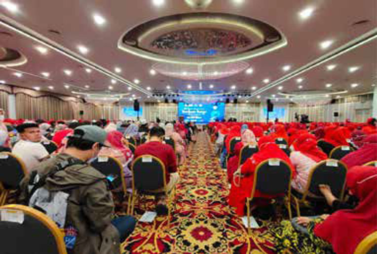
Event management
Trusted across public sector, media, agency and corporate programmes.
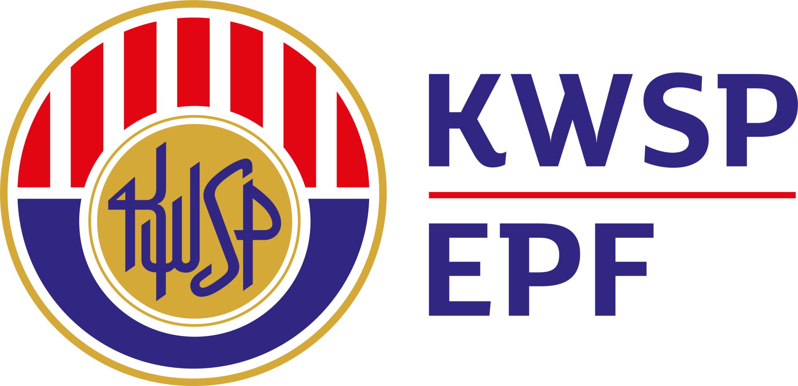
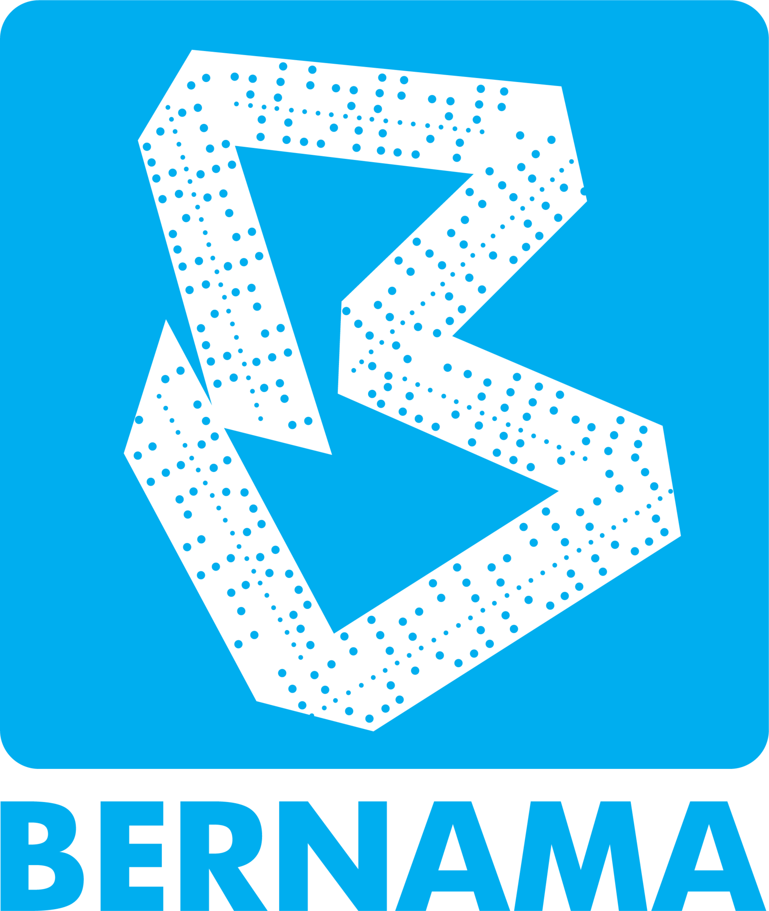
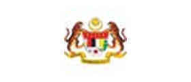
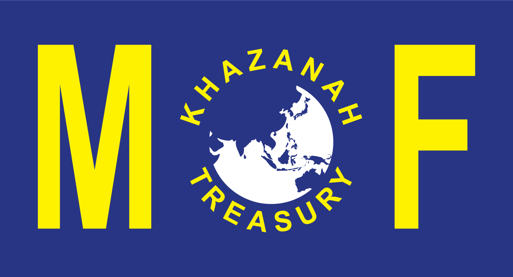
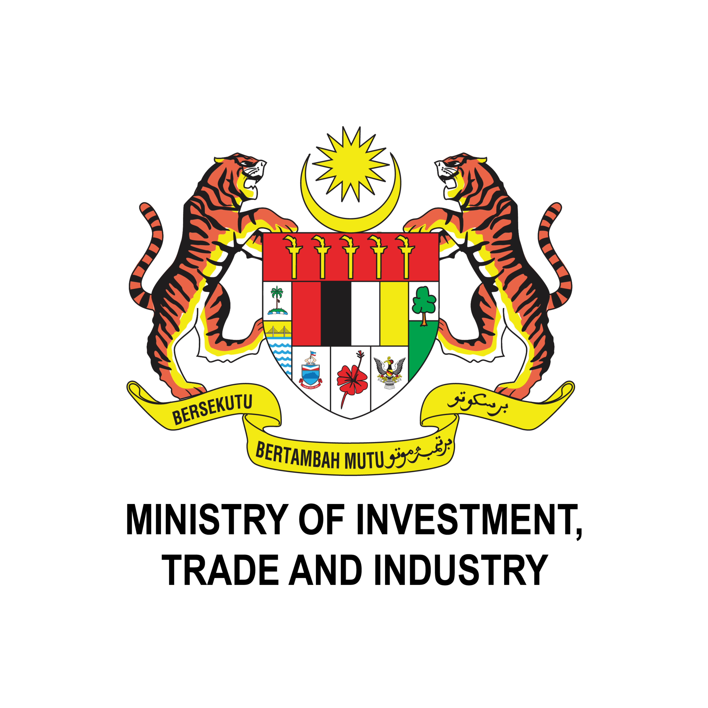
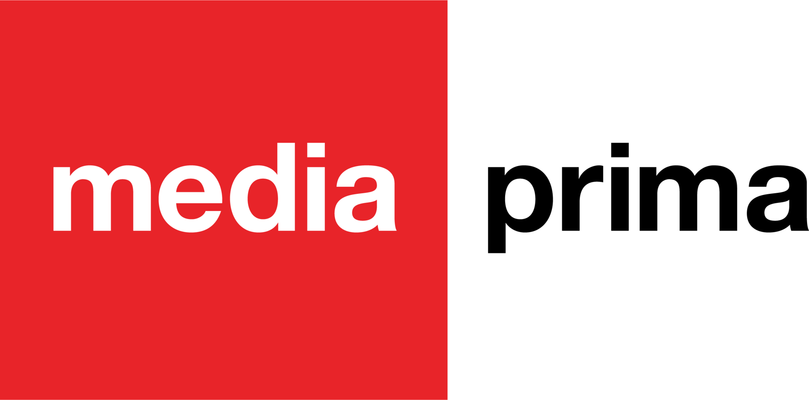
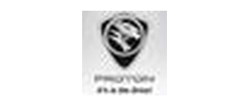
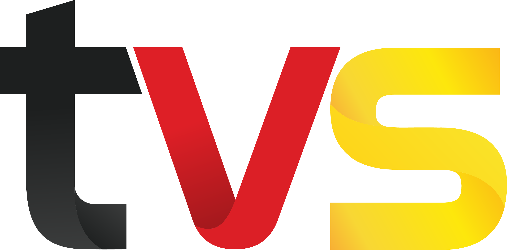
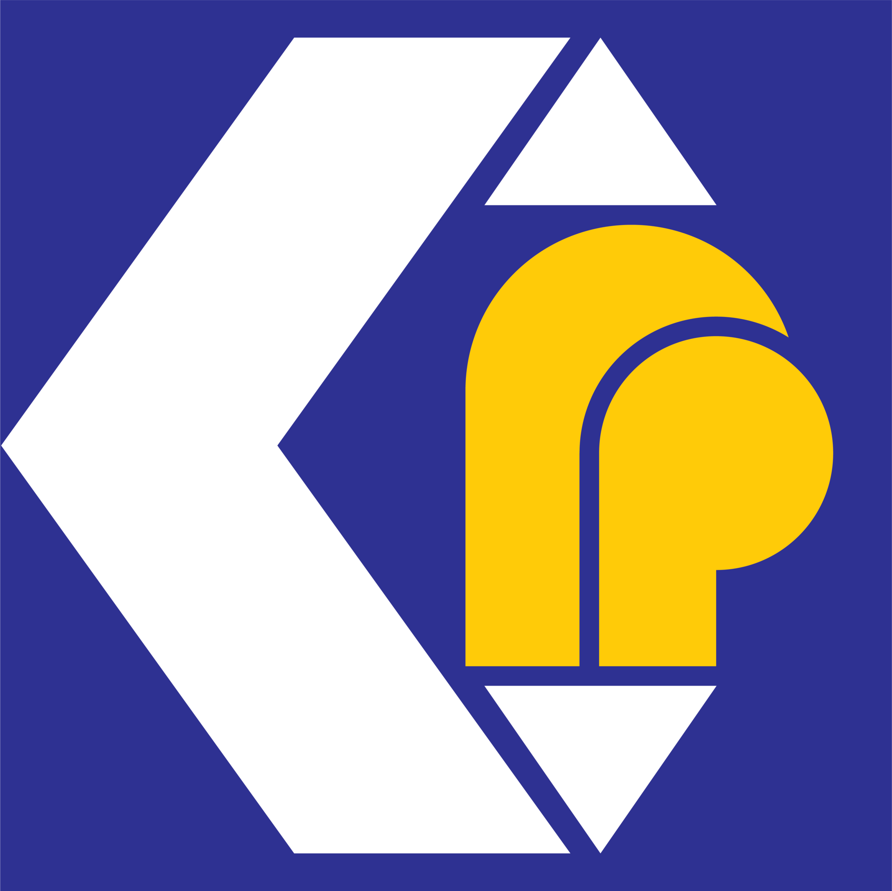
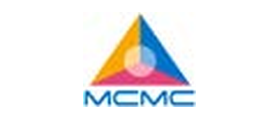
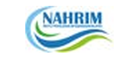
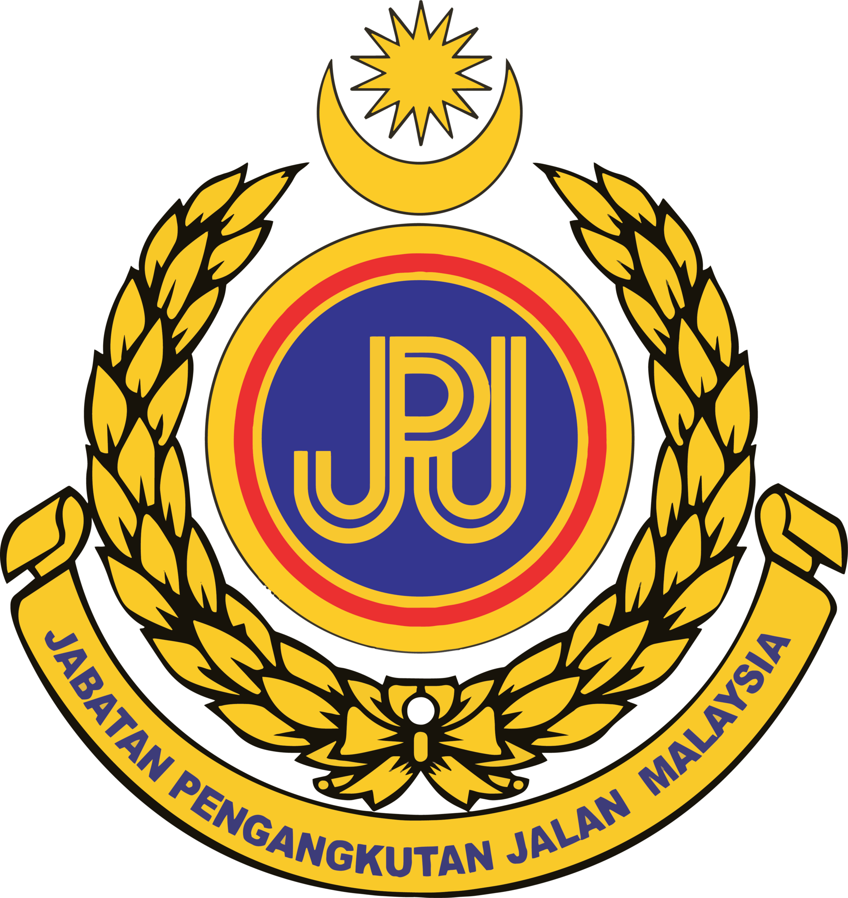
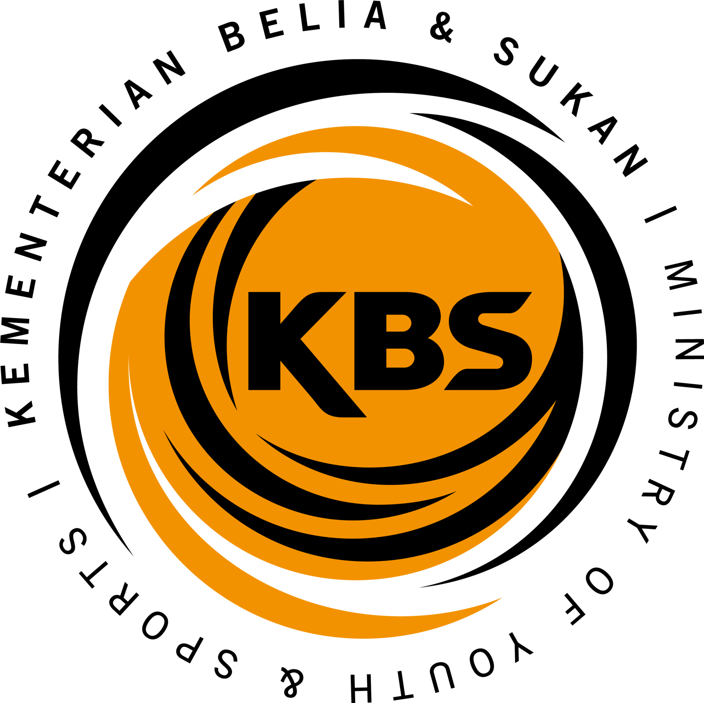
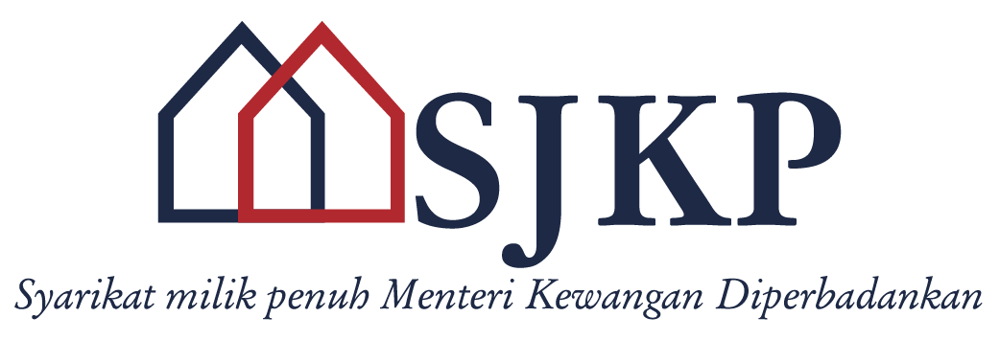
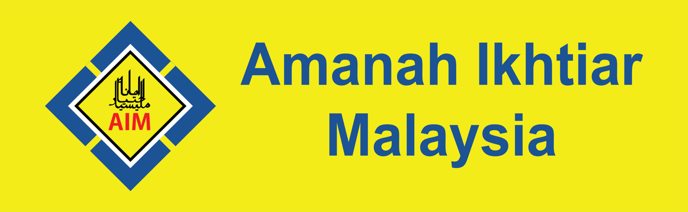
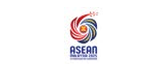
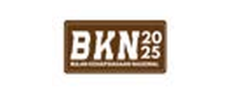
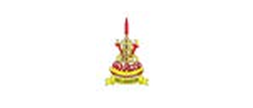
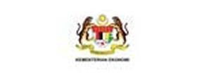
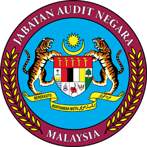
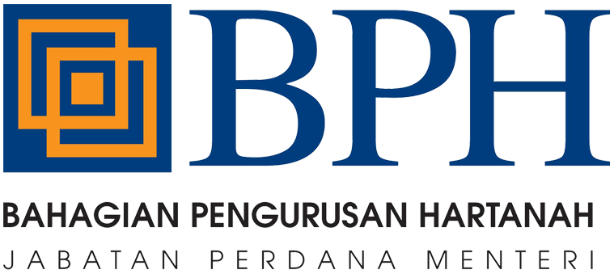
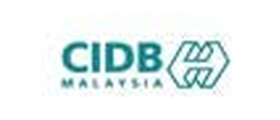
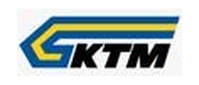
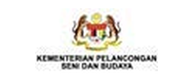
Campaigns, media monitoring, public programmes and event environments with proof in the room.

Event management
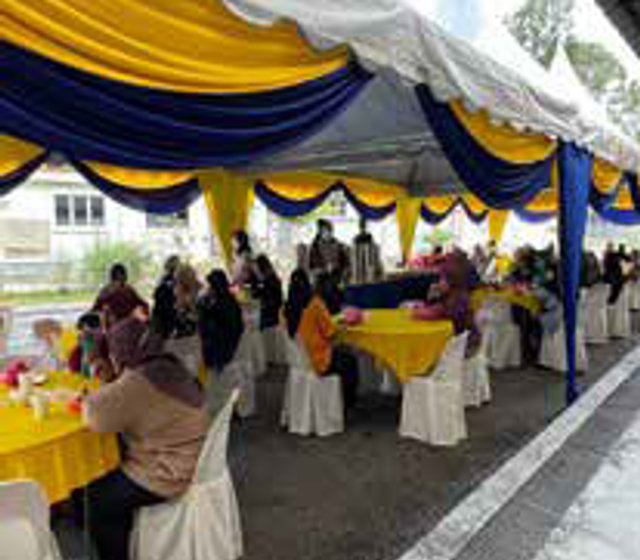
Programme support
Media services
Paid media, campaign visibility, social listening and reporting outputs for stakeholders who need evidence.
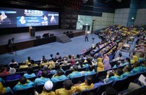
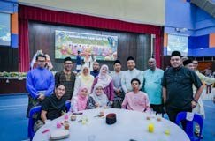
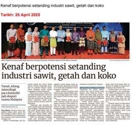
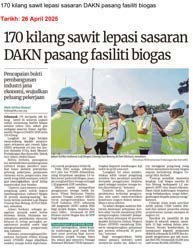
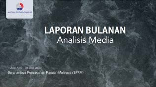
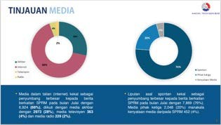
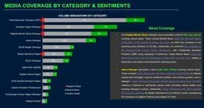
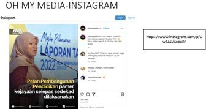
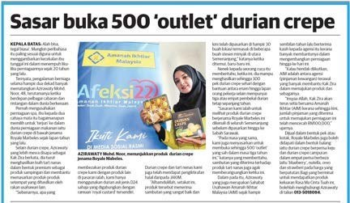
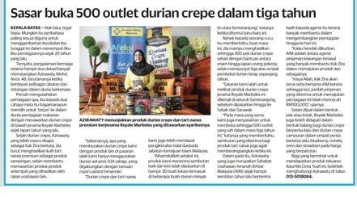
Programme environments, protocol moments, exhibitions, public sessions and on-ground delivery.
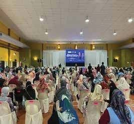
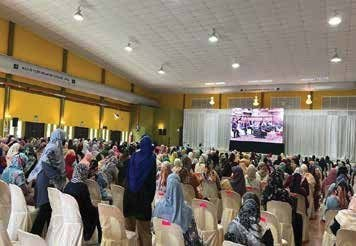
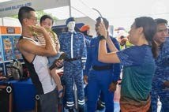
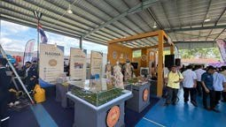
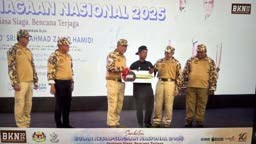
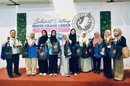
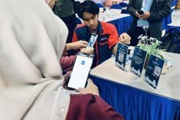
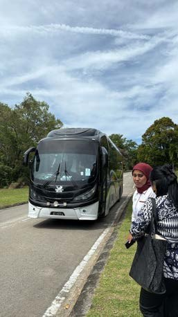
Campaign visuals, public-facing content, merchandise, display material and produced assets.
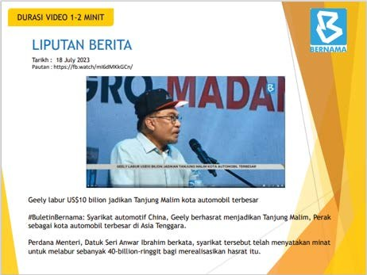
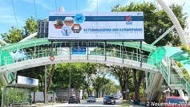
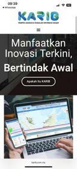
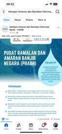
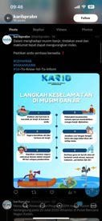
Training, outreach, group sessions and community-facing programme support across multiple locations.
When you are ready, move to enquiry and we will review your campaign requirement.